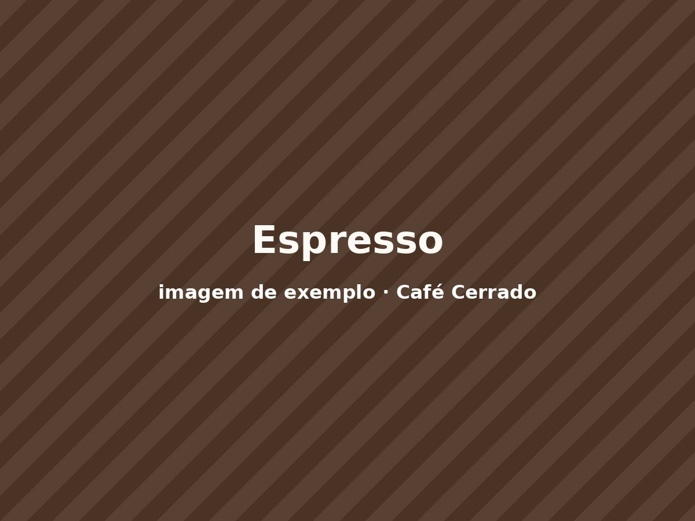
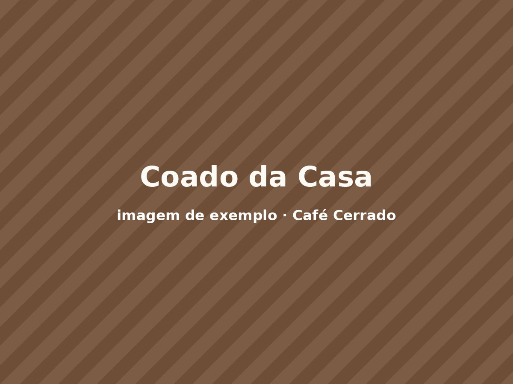
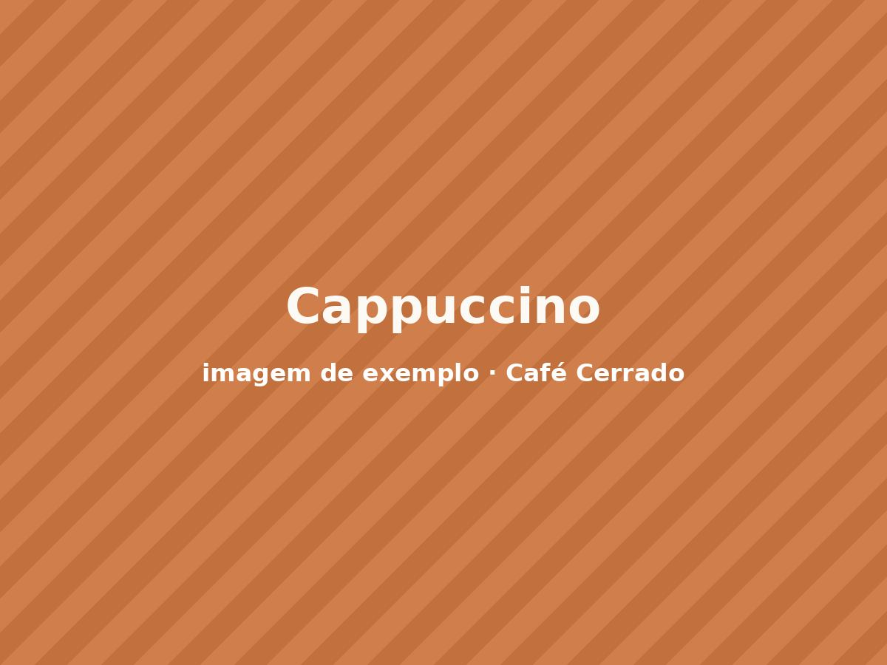
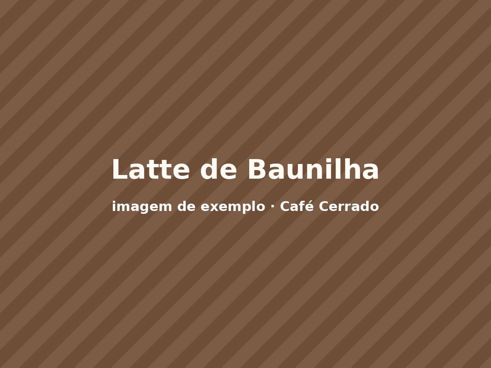
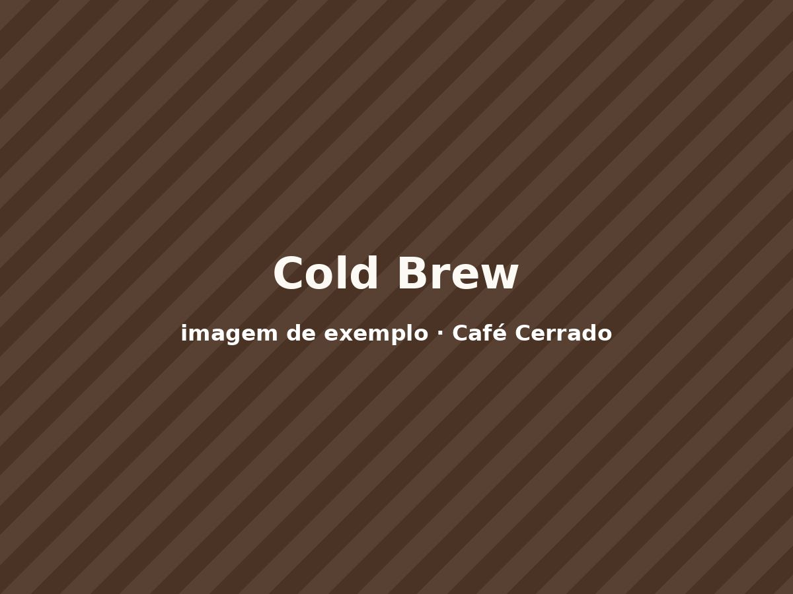
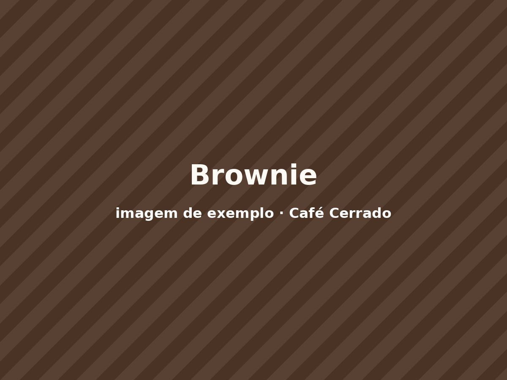

Espresso do Cerrado
Torra média, corpo encorpado e final achocolatado.
R$ 6,00
Pedir

Torra média, corpo encorpado e final achocolatado.

Duzentos mililitros em coador de papel, moagem na hora.

Espresso duplo, leite vaporizado e canela do Cerrado.

Espresso, leite vaporizado e calda de baunilha da casa.

Extração a frio por dezoito horas, com rodela de laranja.

Chocolate meio amargo com castanha-do-pará. Sem glúten.